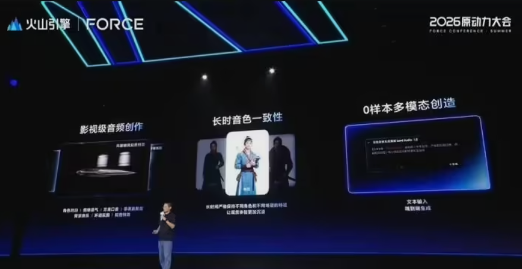
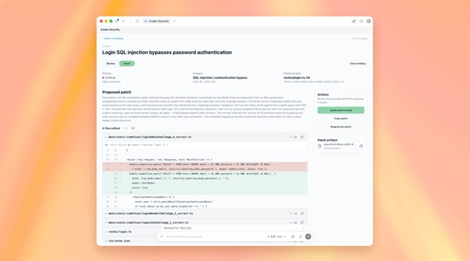

AI Daily: Doubao Unveils Audio Generation Model 1.0; WeCom Trials AI Agent 'Da Yuan'; Cursor Debuts Proprietary Large Language Model
Welcome to [AI Daily] — your daily navigator of the artificial-intelligence landscape. Each edition curates the sector's most consequential developments, with a developer-centric lens, enabling readers to track technical trends and identify cutting-edge AI applications.
Explore new AI products: https://app.aibase.com/zh
1. Doubao Audio Generation Model 1.0 Debuts, Marking the 'Audio Director' Era
Doubao Audio Generation Model 1.0 employs multimodal reference generation and long-duration timbre consistency to transform conventional audio production. The model enables creators to produce full-length, high-quality audio from minimal input, materially reducing the entry threshold for professional audio work.

[AiBase Summary:] 🎙️ Multimodal reference generation facilitates end-to-end audio production 🔊 Long-duration timbre consistency eliminates character-voice conflicts 🎨 Zero-shot multimodal audio creation reduces production barriers
2. Cursor Debuts Proprietary Large Language Model, Introduces Origin Git Platform and iOS Application
Cursor, a product of Anysphere, has released a proprietary large language model alongside the Origin Git platform and a beta iOS application, signaling its evolution from a single-purpose editor into a full-stack developer ecosystem.
[AiBase Summary:] 🧠 Cursor's first proprietary large language model signals its pivot from code editor to full developer platform. 🌐 Origin Git platform enables AI Agent collaboration, demonstrating robust automation capabilities. 📱 Cursor Mobile's iOS beta permits remote AI Agent management, broadening the development ecosystem.
3. WeCom Trials AI Agent 'Da Yuan': Unifying the Enterprise-WeChat Ecosystem to Enhance Workplace Efficiency and Client Operations
WeCom is internally testing AI Agent 'Da Yuan', engineered to unify the enterprise-WeChat ecosystem and drive efficiency gains in workplace operations and client management. Natively embedded within WeCom, the agent transcends the constraints of isolated chatbot interfaces, offering one-click summarization of group discussions, extraction of insights from complex reports, and automated response generation. It further resolves the chronic over-reliance on human judgment in conventional private-domain traffic management.
[AiBase Summary:] Triggered via a left-swipe gesture on the WeCom interface, the agent auto-detects the active screen. Drawing on the extensive work data accumulated within WeCom — group chats, documents, meetings, emails, and calendars — it achieves deep comprehension of user intent. Capitalizing on the native WeCom-WeChat integration, it efficiently interprets and structures unstructured communications among sales, support, and clients.
4. OpenAI Debuts GPT-5.5-Cyber, Steering Vulnerability Remediation Toward 'Automation'
OpenAI's GPT-5.5-Cyber model exhibits robust vulnerability identification and remediation capabilities in the cybersecurity arena, underscoring a pivotal advance for AI within the security domain.

[AiBase Summary:] 🧠 GPT-5.5-Cyber excelled in vulnerability-discovery benchmarks, outperforming peer models. 🔧 The model analyzes source code and generates security patches, accelerating remediation velocity. 📊 Trained on substantial production data, it identified and resolved a significant volume of vulnerabilities.
5. Alibaba Cloud QoderWork Introduces 'Peak-Valley Token': Off-Peak Qwen3.7-Max Access at Up to 80% Discount
Alibaba Cloud QoderWork has introduced the 'Peak-Valley Token' pricing model, designed to incentivize off-peak consumption of AI compute capacity, thereby enabling granular resource allocation and material cost optimization for enterprises and developers. Nighttime task execution — between 22:00 and 08:00 — qualifies for discounts of up to 80%, with the flagship Qwen3.7-Max model receiving the deepest reduction. The model alleviates daytime capacity constraints while mobilizing otherwise idle nocturnal compute resources, accelerating the transition of AI workloads from 'real-time interaction' to 'autonomous nighttime production'.
[AiBase Summary:] 🌙 Nighttime execution (22:00–08:00) qualifies for discounts up to 80% off 🤖 AI agents can autonomously execute end-to-end business processes during off-peak hours ⚡ Alibaba Cloud pioneers time-of-use pricing for AI compute, drawing a parallel to electricity-utility billing models
6. Jimeng AI Seedance 2.0 VIP Debuts Native 4K, Breaking Through Video Generation Resolution Barriers
Jimeng AI's Seedance 2.0 VIP edition has introduced native 4K rendering, processing video output at full 4K resolution from the source to retain higher-density detail. Image-fidelity, color-depth expression, and lighting accuracy have been markedly enhanced. The feature is positioned for professional use cases — including post-production, brand visuals, and advertising — reinforcing the accelerating convergence between technical capability and professional deployment in domestic AI video generation.
[AiBase Summary:] ✅ Native 4K renders video at full 4K resolution, preserving higher-density detail. 💡 Detail accuracy, color-depth expression, and lighting fidelity are elevated to professional standards. 🚀 Propels AIGC video tools into professional production workflows, emerging as a competitive moat in the commercial application landscape.
7. Doubao Launches Version 2.1 Pro: Integrates Pro Model and Debuts New Office Task Mode
Doubao has formally released version 2.1 Pro, incorporating the flagship Pro model alongside a new office-task mode, signaling the evolution of large language models from lightweight productivity aids into full-fledged digital employees.
[AiBase Summary:] 🧠 Incorporates the flagship Doubao 2.1 Pro model, elevating professional productivity 💻 Enables complex actions such as local machine control, browser interaction, and scheduled task execution 💰 Three-tier pricing structure accommodates varied use cases, with a complimentary first-month trial.
8. Google Unveils DiffusionGemma: An Image Generation Model Fusing Pixels and Semantics at a Deep Level
Google has introduced DiffusionGemma, an image-generation model that achieves deep integration of pixel-level and semantic information, contributing a novel technical paradigm to the AI image-generation landscape.
[AiBase Summary:] 🤖 DiffusionGemma integrates Diffusion and Gemma architectures, delivering deep pixel-level and semantic fusion. 🎨 Natively multimodal, it processes complex image-text interactions. 🔬 Trained on extensive open-source community datasets, it elevates generation quality and output diversity.